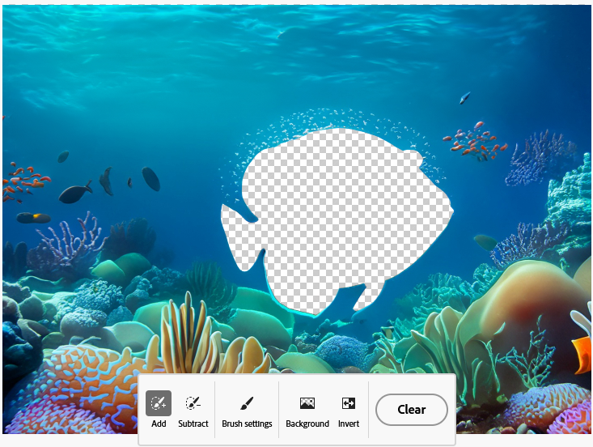

Image Generation
A variety of tools were tested for accuracy and visuals of creating mockups.
Of the tools tested there were various issues with content organization and text readability. Occasionally, the content created is not aligned and does not follow the organization of the reference image. The text generated was often scrambled with various fake words spread across the designs. On the other hand ,the color scheme was maintained in each prompt generation.
Currently, it is not recommended to use AI tools to generate complex web pages. Tools can be used to generate pages with minimal content blocks or to brainstorm design layouts.
Tools Tested
Photoshop
Photoshop Generative Fill Tool
Photoshop's generative fill tool can be used for basic image modification. It works well to approximate imagery based on the existing lighting and objects in the image.
This is done by selecting the area to be replaced using selection tools such as the marquee or lasso tools. Next you type in a prompt and can choose from variations or regenerate responses in the sidebar. Photoshop does a decent job in altering the surrounding area selected to better blend the generated content with the original image.
Shown on the left is the original image. On the right is the altered image using the prompt red house with yellow lights.

Expand with Generative Fill
A unique feature to Photoshop is the ability to "expand" a picture by creating additional image content that mimics the composition of the current picture. This is done by using the crop tool while generative fill is selected. Next users use the option key to expand the picture size in both directions. Photoshop then fills in the extra area created.
In this example Photoshop expands the hill portion of the picture and extends the rock area to the left of the house.

The examples below show an wider flower environment. Photoshop also improves the contrast and lighting.

The generative expand can also be used to improve the composition of photos and fill in cut off or off-centered elements. The examples below show chipmunk and deer pictures expanded to show more of the animal or scene and provide a balanced composition.


Creating a Variation Creating variations of existing images is done by selecting the area and generating content using prompts.
The example below adds a body of water using the lasso tool for selection and the prompt ''Small water lake".
Generative expand was used, then flowers were recolored using generative fill, a bee was added using the lasso tool and generative fill prompt "Small honey bee".
Issues with Generative Expand
Generative expand struggles with reconstructing facial details such as eyes and mouths when using generative expand in Photoshop. Elements generated are misaligned, out of proportion and have blending issues with the existing image.
Shown below is the original image on the left. On the right is the generated example. The original image was cropped and the generative expand was used to see how accurately it would match the reference.
Ando
Ando is a figma plugin that generates design ideas from sketches, images and prompt descriptions. It uses an existing frame within Figma as reference and can output images in various sizes and numbers.
The plugin worked well generating similar images from its reference as well as translating vector art into a realistic image. The plugin struggled generating a similar website mockup, only maintaining a similar color scheme. Content was off-centre and text was scrambled and not readable. In addition the image generated was poorly done with elements blending into each other.
Examples
Ando UI

Example 1: Pizza Generation From a Reference Image

The screenshot above shows the original Mushroom pizza image on the left and generated image variations on the right with the prompt of: ''Large classic mushroom pizza with pepperoni". The second generated image is closer to the original image by adding in the prompt word ''circular" to the previous prompt.
Example 2: Website Homepage Generation From a Reference Image
Prompt: ''A vibrant red landing website page with a bowl of noodles as the main image"
The text included scrambled, fake words. The content issues included misaligned content, and an ugly additional red border. The image generation issues included objects such as chopsticks blending poorly with the noodle soup. The color scheme was maintained.
Adobe Firefly
Adobe Firefly is a set of generative AI tools that allow you to create and modify images and generate decorative text. It can generate stylized images and adding visual elements to existing images based on a given style. It struggles with generating realistic designs, lacks detailed customization options of generated images, and is only usable with public domain and Adobe Stock content. Currently, this limits its usage and accuracy for image generation.
Details
Advantages
- Prompts in general give accurate results
- It is easy to edit generated images by clicking preset options or modifying prompts.
- It can be used commercially in the future as it respects ip rights.
- The similar results button works well to generate variations of images.
- The interface is intuitive. You can alter the prompt or choose from preset options to change the look of the generated image.
Disadvantages
- There are limited Customization options for fine tuning designs once the prompt is inputted. You can only replace parts of the generated image.
- There are inconsistencies with image quality at edges of objects.
- Custom fonts can not be used.
- Video Content is not currently supported.
- Can not currently be used with your own artwork/photos and only with commercially available content like Adobe Stock, public domain, openly licensed footage.
- Struggles with realistic images and human proportions with design elements blending into each other.
Feature Tests
Generative Fill
With generative fill it was easy to add additional design elements to images. Typically you want to add elements within a small area for minimal visual interference. Isolating elements from an image such as removing the background or subjects from an image works well if there are clear foreground and background elements.
Text to Image
This tool struggled with depicting humans in realistic environments due to a lack of reference content. It was better at depicting background scenery, cartoony imagery using the "art" or graphic" presets. Unfortunately, you can't adjust individual elements in the picture but you can change color, tone, lighting, composition presets.
Text Effects
The text effects tool worked the best out of the tools tested. You can apply generative art over text by choosing from options such as preset styles, adherence level to shape, font types, and background or text color.
With this tool the tight match shape option worked the best with generated designs. Simpler prompts work the best with a maximum of two prompt factors used such as the color and type of texture.
Adobe Firefly Generation Examples
Currently Firefly will add a rights usage watermark for all output images while Adobe Express does not.
As the options in Express and Firefly are different it may be difficult to reproduce the same images using the same prompt.
Example: Image Generative Fill
Fish Generation
-
Original Image

-
Removed fish from background
-
Removed the background in fish image
 -
Additional fish added using the prompt "add fish in the water"
Example: Stylistic Variation
Forest With Yellow Wheat Text to Image
-
Prompt: Forest surrounded by yellow wheat
-
Photo version
-
Graphic Version

-
Art Version
Example: Incorrect Content Classification
Shows misaligned limbs, and limbs that incorrectly blend into surfboard.
Surfer on Mars Text to Image
-
Art Version
-
Photo Version.
Example: Text Effects
Firefly Text Effects Presets
Adobe Firefly was used to generate various text variations of the word Android. A tight "fit" was used for the second and third variations to constrain decorative elements within the text letters.
-
Android wires preset text

-
Android baloon preset text
-
Android flowers preset text
Split Text for Multiple Effects
Words can be split up into different text elements to get different effects for specific characters. Here the "WizUX" logo is split into 2 text elements with different text formatting options applied.